Sigclassifier¶
Guía de usuario de SIGnificance¶
2 Organización del manual¶
Este manual tiene el propósito de mostrar el uso del módulo SIGclassifier mediante (1) la explicación de todas las funciones de la plataforma (Sección 3. Organización de la Interfaz) y (2) la ilustración de un ejemplo de uso (Sección 4. Ejemplo de uso). Asimismo, se incluye bibliografía relevante como complemento teórico.
3 Organización de la interfaz¶
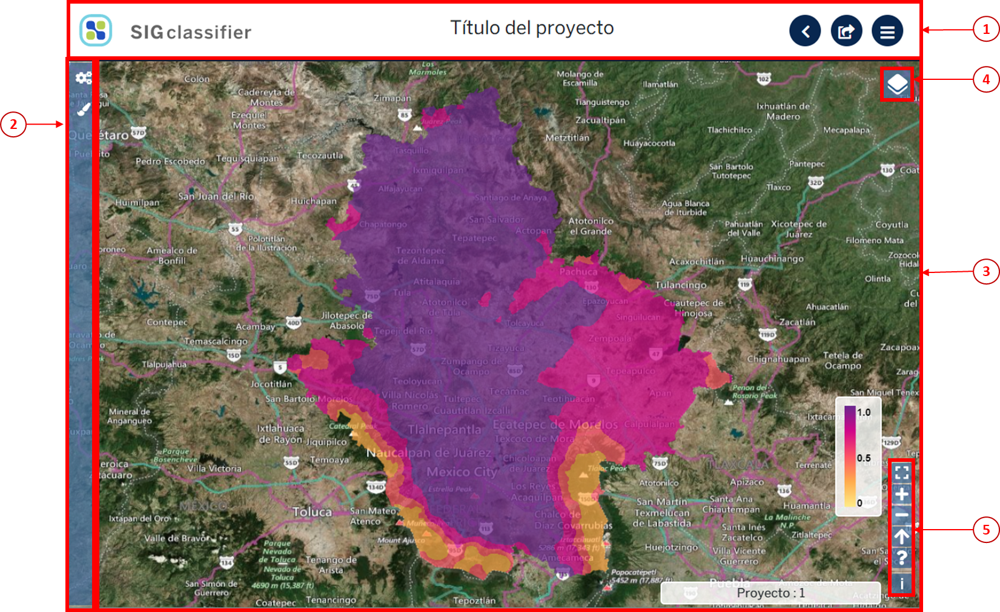La interfaz está organizada en las siguientes secciones:  el encabezado contiene al título y las funciones básicas, en el panel izquierdo se ubica la barra de herramientas, y
el encabezado contiene al título y las funciones básicas, en el panel izquierdo se ubica la barra de herramientas, y  el visualizador de capas incluye los ajustes de despliegue de capas y los ajustes de visualización.
el visualizador de capas incluye los ajustes de despliegue de capas y los ajustes de visualización.
{kind=link}
{kind=link}
{kind=link}
3.1 Funciones básicas¶
Las funciones básicas son tres: botón de inicio, exportar resultados y regresar.
3.1.1 Botón de inicio¶
Al hacer clic en el botón de inicio  , se despliega una ventana con tres opciones: redirecciona al inicio (home) de la plataforma SIGplanning, muestra el nombre del usuario activo y cierra la sesión del usuario activo.
, se despliega una ventana con tres opciones: redirecciona al inicio (home) de la plataforma SIGplanning, muestra el nombre del usuario activo y cierra la sesión del usuario activo.
3.1.2 Exportar¶
Al hacer clic en el botón de exportar , se descarga un shapefile de las unidades naturales en formato .zip, el cual contiene la capa ráster .tif y el metadato asociado en formato .xml, producto del uso del SIGclas-sifier. Para que se genere este archivo, el usuario debe haber seleccionado un tipo de clasificador y los parámetros correspondientes (ver apartado 3.5.1.1).
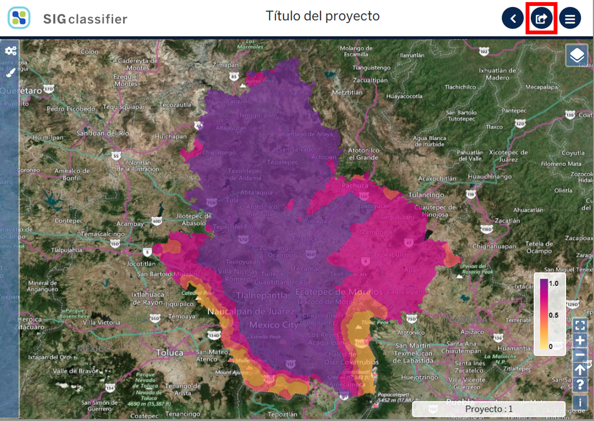{kind=link}
3.1.3 Regresar¶
SIGclassifier tiene dos opciones para regresar al catálogo de proyectos y al resto de los módulos de SIGplanning: el botón de regresar y el ícono del módulo  .
.
{kind=link}
3.2 Visualizador de capas¶
En el visualizador de capas se muestran los resultados de SIGclassifier, así como, los ajustes de despliegue de capas y los ajustes de visualización. En el visualizador se puede mover el mapa, rotar el mapa, hacer acercamientos y ver el valor resultante de la clasificación.
3.2.1 Mover el mapa¶
Hacer clic en cualquier parte del visualizador de capas, mover el ratón en cualquier dirección hasta que el mapa esté en la ubicación deseada.
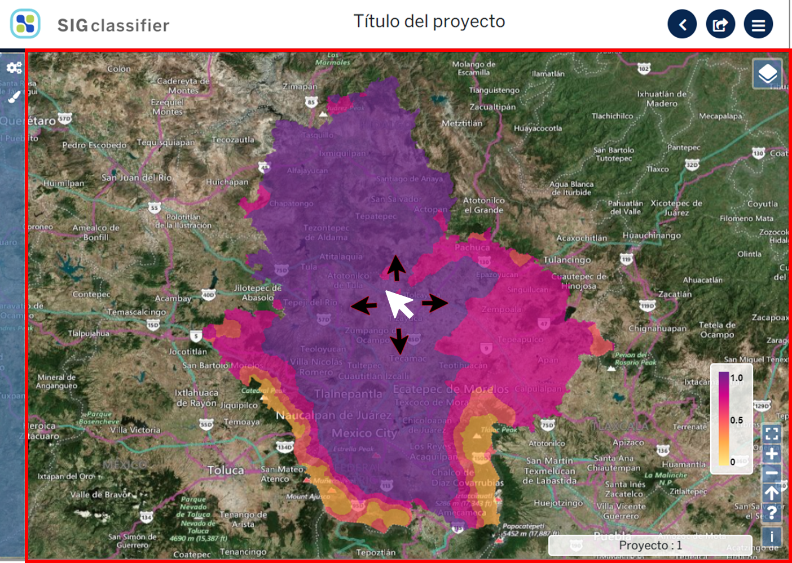3.2.2 Rotar el mapa¶
Hacer clic en cualquier parte del visualizador de capas, sin soltar el ratón, oprimir la tecla Shift y rotar la capa hasta llegar a la orientación deseada.
Al rotar el mapa, aparece el botón del norte geográfico rotado . Al hacer clic sobre el norte geográfico, se reposiciona el mapa a la orientación original.
{kind=link}

3.2.3 Hacer acercamientos¶
Hacer clic en cualquier parte del visualizador de capas y mover la barra de desplazamiento del ratón para acercarse o alejarse.
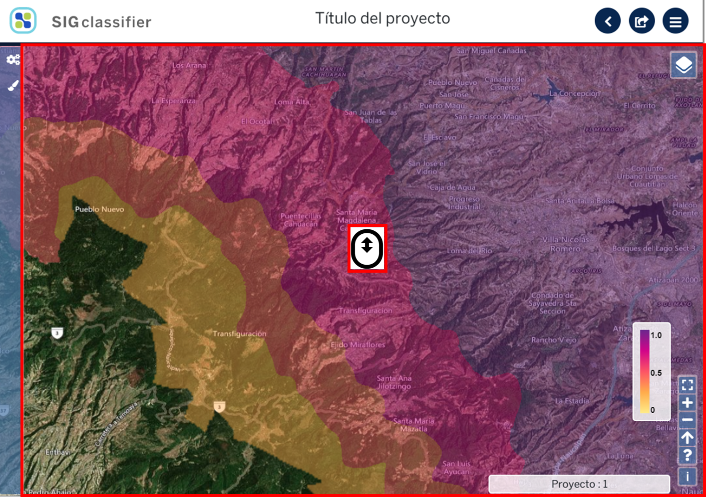3.2.4 Visualizar el resultado de la clasificación¶
Al hacer clic en un pixel de la capa, se despliega una ventana con el valor del pixel resultado de la clasificación.
3.3 Ajustes de despliegue de capas¶
Al hacer clic en el botón de ajustes de despliegue de capas , se despliega una ventana con las opciones: activar o desactivar capas, cambiar el orden de sobreposición de las capas, cambiar la transparencia de las capas y cambiar la capa base.
{kind=link}
3.3.1 Activar o desactivar capas¶
Al hacer clic sobre las casillas de verificación , se activan o desactivan las capas deseadas.
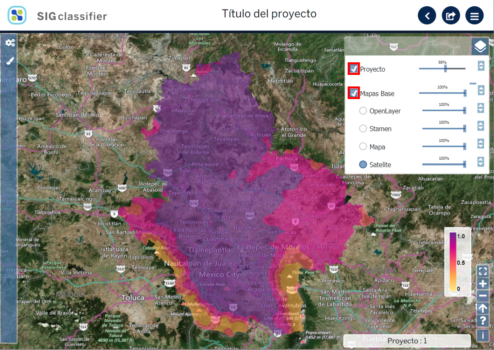{kind=link}
3.3.2 Cambiar el orden de sobreposición de las capas¶
Al hacer clic sobre el botón del orden de sobreposición de capas , deslizar hacia arriba o abajo hasta que se ubiquen en el orden deseado.
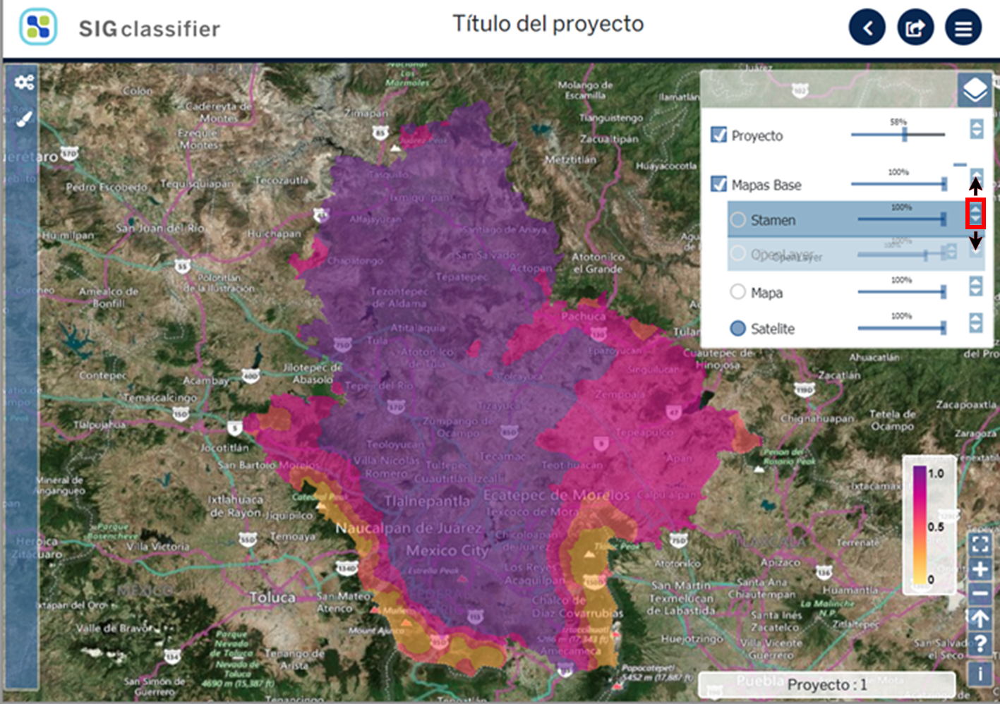{kind=link}
3.3.3 Cambiar la opacidad de las capas¶
Al hacer clic sobre el control deslizante de opacidad de capas  , desplazar a la de-recha o izquierda hasta llegar a la opacidad deseada.
, desplazar a la de-recha o izquierda hasta llegar a la opacidad deseada.
3.3.4 Cambiar la capa base¶
Los ajustes de despliegue de capas tienen cuatro opciones de capa base: OpenLayer, Stamen, Mapa o Satélite. Al hacer clic en el botón de selección  , se selecciona la capa base deseada.
, se selecciona la capa base deseada.
Nota: La opción predeterminada es Satélite.
3.4 Ajustes de visualización¶
Esta sección se compone de seis botones: cambiar al visualizador de capas en pantalla completa, acercar el mapa, alejar el mapa, reajustar el norte geográfico, ver la guía rápida de controles de despliegue y  ver la licencia de la capa base.
ver la licencia de la capa base.
3.4.1 Poner el mapa en pantalla completa¶
Al hacer clic en el botón de pantalla completa , se muestra el área de visualización en la pantalla sin el resto de las secciones.
Al hacer clic en el botón de pantalla completa , se muestra el área de visualización en la pantalla sin el resto de las secciones.
{kind=link}

Para salir de la pantalla completa, volver a oprimir el botón de los ajustes de visualización o la tecla Esc.
3.4.2 Acercar o alejar el mapa¶
Al hacer clic sobre el botón de acercar , se aumenta el zoom en el visualizador de capas.
Al hacer clic sobre el botón de alejar , se disminuye el zoom en el visualizador de capas.
{kind=link}
{kind=link}
3.4.3 Ajustar el norte del mapa¶
Al hacer clic en el botón de norte geográfico  , se reajusta la orientación del visualizador de capas a la posición original.
, se reajusta la orientación del visualizador de capas a la posición original.
3.4.4 Guía rápida de controles de despliegue¶
Al hacer clic en el botón de guía rápida de controles de despliegue  , se despliega una ventana con tres opciones: rotar el mapa, seleccionar un polígono, y hacer zoom a una ventana específica.
, se despliega una ventana con tres opciones: rotar el mapa, seleccionar un polígono, y hacer zoom a una ventana específica.
3.5 Barra de herramientas¶
3.5.1 Factor de progresión¶
Al hacer clic en el botón de Factor Progresión  se despliega una ventana con dos paneles: Clasificador y Parámetros.
se despliega una ventana con dos paneles: Clasificador y Parámetros.

El primer panel tiene la función de , seleccionar el tipo de clasificador. El segundo panel tiene dos funciones: seleccionar parámetros según el clasificador elegido y aplicar el clasificador.
3.5.1.1 Seleccionar el Clasificador¶
Al hacer clic en la lista de despliegue 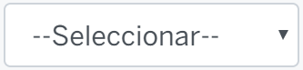 del clasificador se despliegan cuatro tipos de clasificaciones: Weber-Feshner, Progresiva, Cuantiles y Natural breaks.
{kind=link}
Al hacer clic en el clasificador 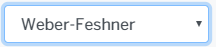, en el panel de Parámetros se muestran los valores Máximo y Mínimo predeterminados, los cuales no pueden ser modificados. El usuario debe elegir el valor del factor de progresión que aparece en la casilla del Factor.
{kind=link}
Para cambiar el factor de progresión, hacer clic en el botón del control deslizante 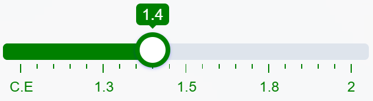, desplazar hacia la derecha o izquierda hasta llegar al valor deseado. Automáticamente se muestra el valor en la casilla del Factor que puede ir de la clasificación equidistante (C. E.) hasta el valor 3.
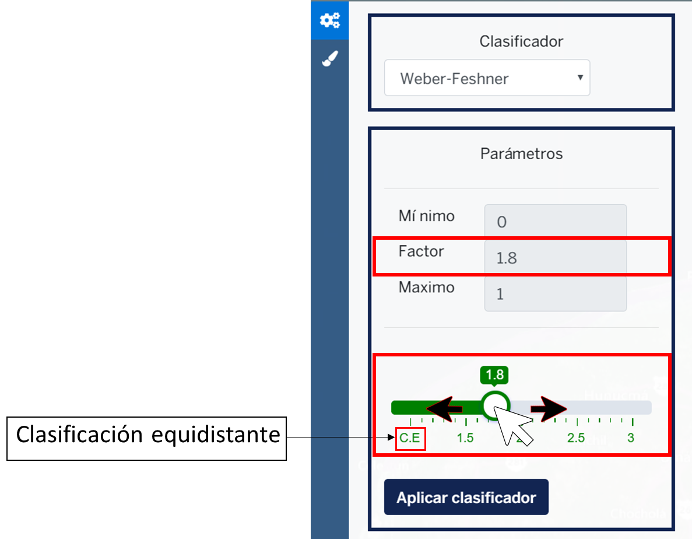{kind=link}
Hacer clic en el botón en la parte inferior del panel, se despliega en el visualizador de capas el mapa resultado de la aplicación del clasificador seleccionado.
{kind=link}

Al hacer clic en el clasificador 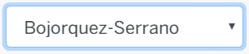 en el panel de Parámetros se muestran los valores Máximo y Mínimo predeterminados, los cuales no pueden ser modificados. El usuario debe elegir el valor del factor de progresión que aparece en la casilla del Factor.
{kind=link}
Para cambiar el factor de progresión, hacer clic en el botón del control deslizante , desplazar hacia la derecha o izquierda hasta llegar al valor deseado. Automáticamente se muestra el valor en la casilla del Factor que puede ir de la clasificación equidistante (C. E.) hasta el valor 3.
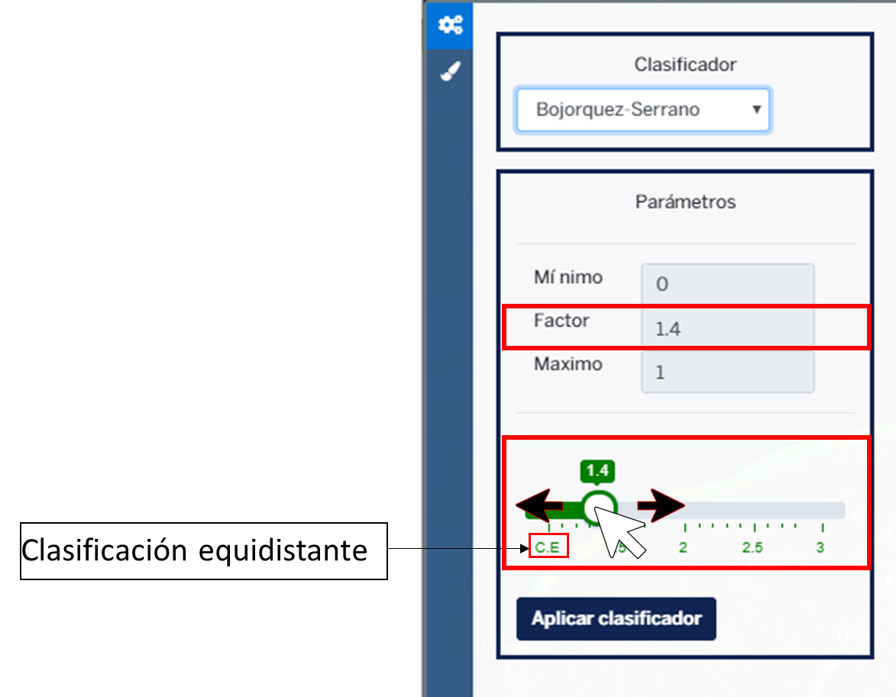Hacer clic en el botón en la parte inferior del panel, se despliega en el visualizador de capas el mapa resultado de la aplicación del clasificador seleccionado.

Al hacer clic en el clasificador 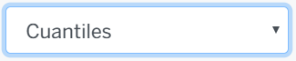 en el panel de Parámetros se muestran los valores Máximo y Mínimo predeterminados, los cuales no pueden ser modificados. En la parte inferior del panel se muestra una lista desplegable con los tipos de cuantiles a elegir: Cuartiles, Quintiles, Deciles y Percentiles.
{kind=link}
Hacer clic en el botón en la parte inferior del panel, se despliega en el visualizador de capas el mapa resultado de la aplicación del clasificador seleccionado.

Al hacer clic en el clasificador  en el panel de Parámetros se muestran los valores Máximo y Mínimo predeterminados, los cuales no pueden ser modificados.
en el panel de Parámetros se muestran los valores Máximo y Mínimo predeterminados, los cuales no pueden ser modificados.

Hacer clic en el botón en la parte inferior del panel, se despliega en el visualizador de capas el mapa resultado de la aplicación del clasificador seleccionado.
3.5.2 Paletas de colores¶
Al hacer clic en el botón  se despliega una ventana que muestra la gama de color en la que aparece la capa del proyecto.
se despliega una ventana que muestra la gama de color en la que aparece la capa del proyecto.
3.5.2.1 Cambiar el color del proyecto¶
Al hacer clic en el botón aparece una lista de despliegue con 12 paletas de colores a elegir, al hacer clic en el control deslizante hacia arriba y abajo se puede seleccionar una paleta para representar los valores de la capa en el visualizador.
{kind=link}
4 Requerimientos
5 Herramientas 5.1 Crear un proyecto nuevo
6 Ejemplo de uso
7 Referencias